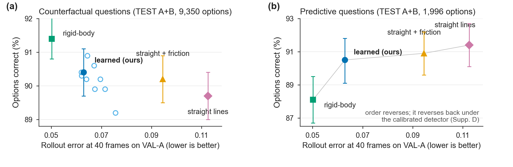
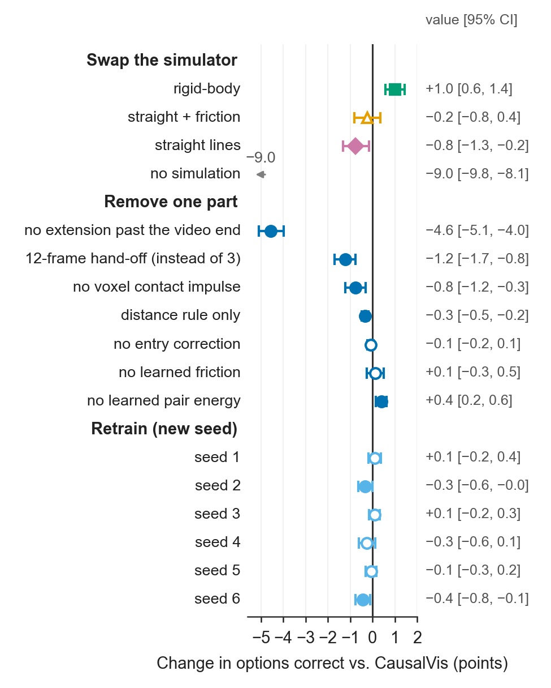
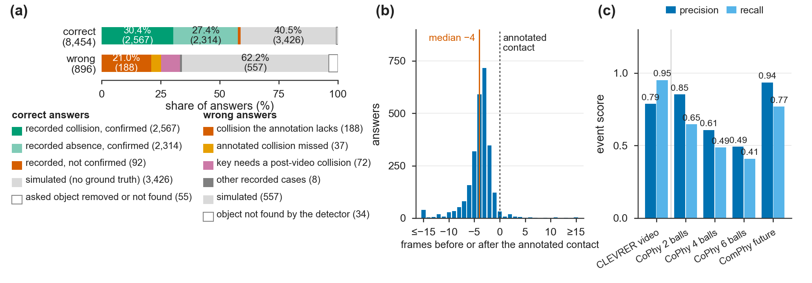
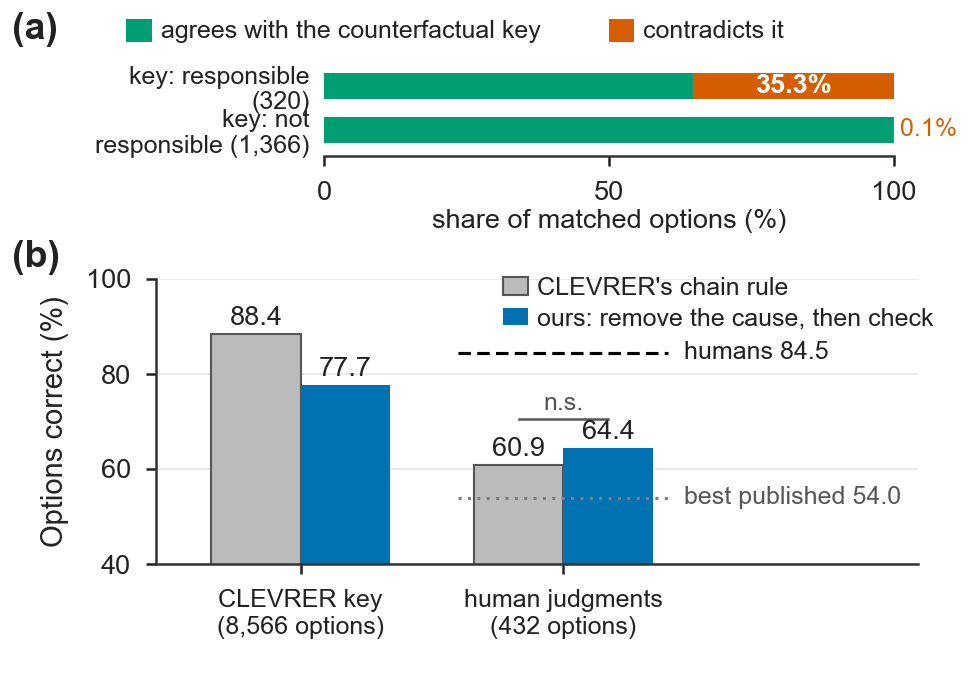

Counterfactual video reasoning · benchmark audit
A world model is useful for physical AI only if it gets the physics right, so the benchmarks we use to verify one must reward physical accuracy. We built an instrument to test whether the most widely used counterfactual video benchmark does.
CausalVis answers CLEVRER's counterfactual questions by explicit intervention. It removes the object, keeps every other object on its recorded path until the change can reach it, hands the reached objects to a simulator, and returns the event that decided each answer. Every stage is held fixed except the simulator, which can be swapped. The engine is never trained on questions or answers.
This is not a system entered into a leaderboard. It is a measuring device, and an audit run with it on 1,398 held-out videos.
2.2× → 2.2 points. Swapping the simulator across a 2.2× range of rollout error moves the counterfactual score by 2.2 points. Straight-line motion lands within 0.75 points of a learned world model.
Two choices containing no physics matter more than the choice of simulator: how long the world runs past the last recorded frame is worth 4.6 points, and when objects are handed to the simulator is worth 1.2 points.
Physics as a whole is not optional: removing simulation entirely costs 9.0 points. The claim is narrower, and we think more useful — above a low bar, accuracy buys almost nothing on this metric.
| Simulator | Rollout err @40 | Options | Questions |
|---|---|---|---|
| Analytic rigid-body, constants fitted on training videos | 0.050 | 91.4% | 75.0% |
| Learned world model (43k parameters) | 0.063 | 90.4% | 72.3% |
| Straight lines + friction | 0.095 | 90.2% | 71.9% |
| Straight lines | 0.113 | 89.7% | 70.2% |
| No simulation at all | — | 81.4% | 50.1% |
| A 7B vision-language model, 16 frames | — | 54.4% | 2.9% |
| Answer “no” to every event | — | 54.1% | 0.0% |
The gap between the best and worst real simulator is 1.7 points. The gap between having a simulator and not having one is 9.0. A general vision-language model given the frames lands at the level of answering “no” to everything.




Because the engine returns the event behind each answer, we can ask what the accuracy rests on. We propose that benchmarks intended to verify world models report two quantities alongside accuracy:
Both are cheap once a system reports its deciding event, and together they distinguish a model that is right for the right reason from one inheriting its score from the evaluation protocol. The recipe needs no new annotation: make the simulator swappable, push a deliberately weak baseline through the same harness, and log which predicted event each decision rested on.
The scenes are synthetic, planar, with three shapes and one object size, and no manipulator is involved; the instrument has not been tested on real video or contact-rich interaction. Perception reads a detector trained with the dataset's own labels. The simulators span a range of quality but are all rigid-body planar models, so we cannot say where saturation begins, only that it lies below the accuracy of straight-line motion. Seven checkpoints of one training recipe span 0.5 points on this benchmark, which is as large as several of the effects reported, and that spread is itself part of the finding.
The repository carries the engine, the trained checkpoints, the splits, the recovered camera, every paper experiment, and one record per answered option of every test run.